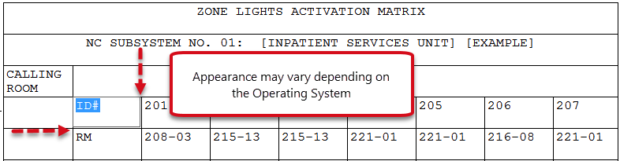
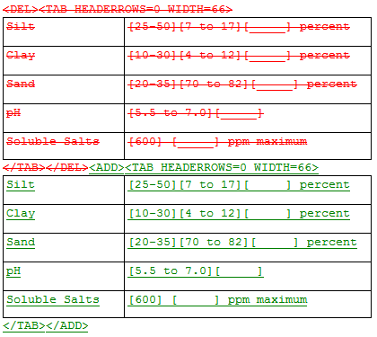
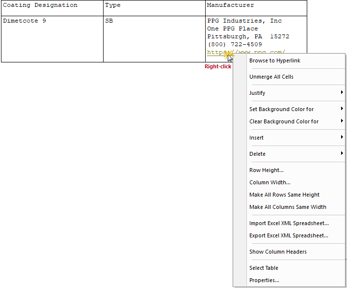
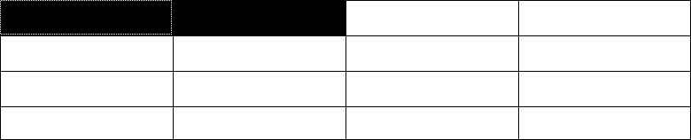

SpecsIntact Formatted Tables are unique to the SI Editor. Before editing, understand their specific functionality. You'll find helpful editing tools in the Table menu and Right-click menus. To simplify editing, tags are only visible in Edit Mode.
 For optimal display, avoid placing text or brackets on the same line as a Formatted Table (TAB) tag.
For optimal display, avoid placing text or brackets on the same line as a Formatted Table (TAB) tag.
Edit Mode in Formatted Tables is activated by clicking in any cell. From there, you can start entering data, applying formatting, or adding tags. To cancel Edit Mode, press the ESC key.

For the best experience editing Formatted Tables with Revisions, we recommend duplicating the Formatted Table by 1) selecting the table 2) copying, 3) deleting, then 4) pasting it below the existing Formatted Table. By doing this, the ADD and DEL tags will be eliminated from each cell that has been edited, making the Formatted Table easier to edit and read. Refer to the 'How To Use This Feature' section at the end of this topic.
The illustration below clearly shows the changes made to the table. The original table is marked with DEL tags, indicating its removal, while the new table is marked with ADD tags, signifying its addition as a replacement. This visual representation shows the original table has been deleted and a new one has been inserted in its place, ready to edit.

Navigate cells using the Tab key to quickly move to the next cell. Arrow keys control movement within the cell during editing while Edit Mode is active. When you reach the end of the cell content, arrow keys will move to the next cell.
There are three right-click menus available while working with Formatted Tables:
The standard Table right-click menu provides options for changing the entire table. This pop-up menu is activated by hovering over a row or cell and right-clicking.
 Menu options that appear inactive require either cell(s), row(s), column(s), or text to be selected.
Menu options that appear inactive require either cell(s), row(s), column(s), or text to be selected.
 Click on the image menu option below to display details for each function.
Click on the image menu option below to display details for each function.

The Edit right-click menu is available when the Edit Mode is active. To activate this menu, click in the cell, then right-click. This menu offers a variety of helpful tools and for added convenience, includes a full pop-up Table right-click menu.
 Click on the image menu option below to display details for each function.
Click on the image menu option below to display details for each function.

The Browse to Hyperlink right-click menu option becomes available in the right-click menu when a hyperlink is activated by placing the cursor over a hyperlink, right-clicking and selecting Browse to Hyperlink. This option will open the hyperlink in your default Browser (e.g., Google Chrome, Microsoft Edge, etc.).
 Click on the image menu option below to display details for each function.
Click on the image menu option below to display details for each function.


 To avoid complications while editing tables, it is best to temporarily disable the View menu > Tags
To avoid complications while editing tables, it is best to temporarily disable the View menu > Tags  until you've entered all your data.
until you've entered all your data.
When adjusting row(s) heights, begin from the bottom of the table and work upwards, or use the Row Height command. Similarly, when adjusting column widths, begin from the rightmost column and move leftward or use the Column Width command.
Tailoring Options can be applied to an entire table, however, the Tailoring tag must be on the same line as the Formatted Table (TAB) tag. Tailoring within a table becomes more complex when adding or removing Tailoring Options since there is no way to tailor an entire row or column. To apply Tailoring, the data within the cells are tailored individually. When using the Tailoring Options tool to remove these options, blank rows or cells will remain, therefore, they must be manually deleted by the individual editing the Section.
Inserting brackets within a Formatted Table is more complex, especially when a row or multiple rows need to be bracketed.
There are two options to consider:
When using Bracket Replacement, if the brackets and their content are removed from a cell, any resulting empty rows should also be deleted.
The SI Editor's Copy, Copy Without Tags, and Paste commands can be used in many ways. You can either copy and paste text into a table cell, column, row, the same table, or other SpecsIntact tables.
SpecsIntact Formatted Tables require a pre-existing structure for pasting content from Excel or Word. Before pasting, insert a blank row or column, or create a new table.
Many organizations have restricted the use of Excel XML spreadsheets. SpecsIntact streamlines the import of data from Excel, Word, and other applications by enabling simple copy-and-paste functionality.
Users are encouraged to visit the SpecsIntact Website's Support & Help Center for access to all of our User Tools, including Web-Based Help (containing Troubleshooting, Frequently Asked Questions (FAQs), Technical Notes, and Known Problems), eLearning Modules (video tutorials), and printable Guides.
| CONTACT US: | ||
| 256.895.5505 | ||
| SpecsIntact@usace.army.mil | ||
| SpecsIntact.wbdg.org | ||